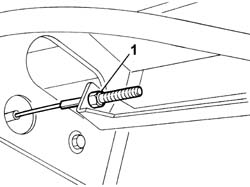
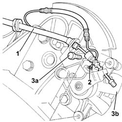
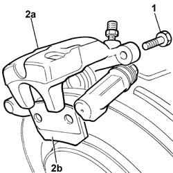

3310B34 REAR BRAKE CALIPERS - R + R - INCLUDES HANDBRAKE ADJUSTMENT
- Path
- Procedures > 33 BRAKES > 3310 DISC BRAKES > 3310B REAR DISC BRAKES > 3310B34 REAR BRAKE CALIPERS - R + R - INCLUDES HANDBRAKE ADJUSTMENT
- Kind
- repair procedure (removal / refitting; the operation number is the code)
- Applies to
- all engines; all production periods
- Interactive page
- https://sloeber94.github.io/elrnDB-fUlss/en/#/179007289
Applies to: all engines; all production periods
 Removing
Removing
 Refitting
RefittingPosition the vehicle on a lift.
See
Op. 4450B11 REAR WHEEL (ONE) - R.R.
1. Loosen the handbrake adjustment screw.

Applies to: all engines; all production periods
1. Disconnect the handbrake cable from the rear caliper.
Description | Code | Function | |
|---|---|---|---|
. | Spanner | Polygonal spanner for brake connector |
2. Undo the rigid rear brake pipe.

Applies to: all engines; all production periods
1. Undo the bolts fixing the rear brake caliper to the bracket.
2. Remove the rear brake caliper (2a) from the brackets and remove the brake pads (2b).

Applies to: all engines; all production periods
Refitting
RemovingUsing the special tool, retract the rear brake caliper cylinders.
Description | Code | Function | |
|---|---|---|---|
. | Spanner | Positioning brake caliper cylinders |
Fit the brake pads inside the brake caliper.
Fit the rear brake caliper on the disc.
- Apply a locking compound to the caliper bolt.
- Tighten the nuts securing the rear caliper to the bracket and tighten to the specified torque.
Component | Fastening | dia | Value daNm |
|---|---|---|---|
REAR BRAKE CALIPERS - R&R - Includes handbrake adjustment | Bolts | 3,5 |
Using the special tool and a torque wrench, tighten the rigid brake pipe to the brake caliper to torque.
Description | Code | Function | |
|---|---|---|---|
. | Spanner | Polygonal spanner for brake connector |
Secure the handbrake cable in the housing.
See
Op. 0010T65 HYDRAULIC BRAKE SYSTEM - BLEED AIR
See
Op. 4450B11 REAR WHEEL (ONE) - R.R.
See
Op. 3380A04 HANDBRAKE - ADJUST TRAVEL
Remove the vehicle from the lift.
Test the operation of the braking system.
Topics linked from this page (3)
- 0010T65 HYDRAULIC BRAKE SYSTEM BLEED AIR
- 3380A04 HANDBRAKE - ADJUST TRAVEL
- 4450B11 TYRE INFLATION VALVE CAP - REPLACE